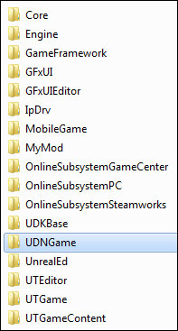
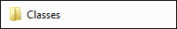
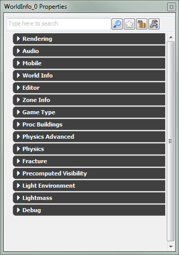
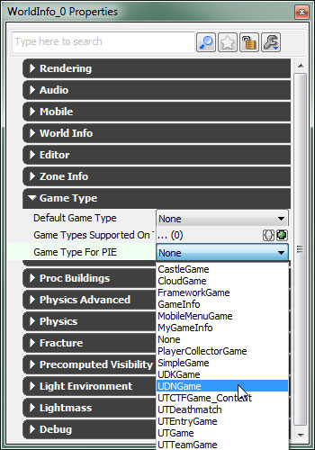
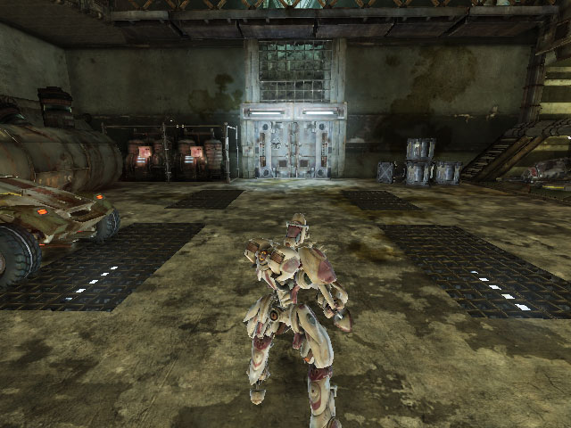

UDN
Search public documentation:
BasicGameQuickStart
日本語訳
中国翻译
한국어
Interested in the Unreal Engine?
Visit the Unreal Technology site.
Looking for jobs and company info?
Check out the Epic games site.
Questions about support via UDN?
Contact the UDN Staff
中国翻译
한국어
Interested in the Unreal Engine?
Visit the Unreal Technology site.
Looking for jobs and company info?
Check out the Epic games site.
Questions about support via UDN?
Contact the UDN Staff
UE3 Home > UnrealScript > Basic Game Quick Start
UE3 Home > Gameplay Programming > Basic Game Quick Start
UE3 Home > Gameplay Programming > Basic Game Quick Start
Basic Game Quick Start
Overview
Project Setup
UnrealScript Project
Any new game project is eventually going to require using UnrealScript to create custom classes to form the gameplay for the game. Adding new UnrealScripts requires setting up a custom UnrealScript project to hold the scripts, which is compiled into a new UnrealScript package (.u file). To create an UnrealScript project, first find the..\Development\Src directory in your Unreal installation. Inside this directory, create a new folder with the name you want to give the project. Usually this is some abbreviated version of your game's name followed by "Game". For instance, the Unreal Tournament games would use UTGame.
In the example game being created here, the UnrealScript project will be named UDNGame. The new folder is located in the ..\Developement\Src directory once it has been created:

Inside this UDNGame folder, a new folder is created named Classes. This is the actual folder that will hold the scripts for the project.

For a detailed guide to setting up custom UnrealScript projects, see the Custom UnrealScript Projects page.
Content Directory
A game is nothing without content. You have to have visual elements to display on the screen, audio to play, etc. and of course maps are needed to put all the content together and present it to the player. In general, content is stored within packages (a map is package too) that are themselves stored in the..\[GameName]\Content directory of the Unreal installation. There are usually folders such as Characters, Environments, Maps, Sounds, etc. found in the Content directory that allow for organization of the content packages and maps.
When using UDK, these sub-folders are populated with example content. You could very easily just save your game's custom content packages and maps in these same folders and everything would work perfectly well. However, if keeping your custom content separate from the other content is something you desire, you can simply create a new folder in the Content directory, perhaps with the name of your game, and save your packages in that folder. You can even add more folders within that one to organize the packages similarly to the manner in which they are organized in the Content directory.
Gameplay Classes
Camera
One of the most fundamental aspects of any game is how the player views the world. In Unreal, the position and orientation of the player's viewpoint is handled in theGetPlayerViewPoint() function of the PlayerController class. By default, if there is a player camera object, that is allowed to handle the calculation. It can use one of two methods to calculate the position and orientation:
- Call
CalcCamera()in thePawnfrom theUpdateCamera()function. - Calculate the perspective directly in the
UpdateCamera()function.
Pawn class using the CalcCamera() function, but the idea of keeping the camera logic encapsulated in a separate class in addition to the fact that using a camera class provides access to all the camera features, such as post processing and camera animations, the example will be using a custom Camera class to handle positioning the camera. Although this example has a third-person perspective, any other type of camera can be implemented easily by changing the logic that calculates the camera position and rotation.
The Camera Technical Guide provides a detailed explanation of cameras and has examples of other perspective implementations.
class UDNPlayerCamera extends Camera;
var Vector CamOffset;
var float CameraZOffset;
var float CameraScale, CurrentCameraScale; /** multiplier to default camera distance */
var float CameraScaleMin, CameraScaleMax;
function UpdateViewTarget(out TViewTarget OutVT, float DeltaTime)
{
local vector HitLocation, HitNormal;
local CameraActor CamActor;
local Pawn TPawn;
local vector CamStart, CamDirX, CamDirY, CamDirZ, CurrentCamOffset;
local float DesiredCameraZOffset;
// Don't update outgoing viewtarget during an interpolation
if( PendingViewTarget.Target != None && OutVT == ViewTarget && BlendParams.bLockOutgoing )
{
return;
}
// Default FOV on viewtarget
OutVT.POV.FOV = DefaultFOV;
// Viewing through a camera actor.
CamActor = CameraActor(OutVT.Target);
if( CamActor != None )
{
CamActor.GetCameraView(DeltaTime, OutVT.POV);
// Grab aspect ratio from the CameraActor.
bConstrainAspectRatio = bConstrainAspectRatio || CamActor.bConstrainAspectRatio;
OutVT.AspectRatio = CamActor.AspectRatio;
// See if the CameraActor wants to override the PostProcess settings used.
CamOverridePostProcessAlpha = CamActor.CamOverridePostProcessAlpha;
CamPostProcessSettings = CamActor.CamOverridePostProcess;
}
else
{
TPawn = Pawn(OutVT.Target);
// Give Pawn Viewtarget a chance to dictate the camera position.
// If Pawn doesn't override the camera view, then we proceed with our own defaults
if( TPawn == None || !TPawn.CalcCamera(DeltaTime, OutVT.POV.Location, OutVT.POV.Rotation, OutVT.POV.FOV) )
{
/**************************************
* Calculate third-person perspective
* Borrowed from UTPawn implementation
**************************************/
OutVT.POV.Rotation = PCOwner.Rotation;
CamStart = TPawn.Location;
CurrentCamOffset = CamOffset;
DesiredCameraZOffset = 1.2 * TPawn.GetCollisionHeight() + TPawn.Mesh.Translation.Z;
CameraZOffset = (DeltaTime < 0.2) ? DesiredCameraZOffset * 5 * DeltaTime + (1 - 5*DeltaTime) * CameraZOffset : DesiredCameraZOffset;
CamStart.Z += CameraZOffset;
GetAxes(OutVT.POV.Rotation, CamDirX, CamDirY, CamDirZ);
CamDirX *= CurrentCameraScale;
TPawn.FindSpot(Tpawn.GetCollisionExtent(),CamStart);
if (CurrentCameraScale < CameraScale)
{
CurrentCameraScale = FMin(CameraScale, CurrentCameraScale + 5 * FMax(CameraScale - CurrentCameraScale, 0.3)*DeltaTime);
}
else if (CurrentCameraScale > CameraScale)
{
CurrentCameraScale = FMax(CameraScale, CurrentCameraScale - 5 * FMax(CameraScale - CurrentCameraScale, 0.3)*DeltaTime);
}
if (CamDirX.Z > TPawn.GetCollisionHeight())
{
CamDirX *= square(cos(OutVT.POV.Rotation.Pitch * 0.0000958738)); // 0.0000958738 = 2*PI/65536
}
OutVT.POV.Location = CamStart - CamDirX*CurrentCamOffset.X + CurrentCamOffset.Y*CamDirY + CurrentCamOffset.Z*CamDirZ;
if (Trace(HitLocation, HitNormal, OutVT.POV.Location, CamStart, false, vect(12,12,12)) != None)
{
OutVT.POV.Location = HitLocation;
}
}
}
// Apply camera modifiers at the end (view shakes for example)
ApplyCameraModifiers(DeltaTime, OutVT.POV);
}
defaultproperties
{
CamOffset=(X=12.0,Y=0.0,Z=-13.0)
CurrentCameraScale=1.0
CameraScale=9.0
CameraScaleMin=3.0
CameraScaleMax=40.0
}
PlayerController
Another fundamental aspect of any game is how the input from the player is handled and how it is translated into controlling the game, whether it is directly controlling a main character onscreen, using a point-and-click interface to control the game, or any other method of controlling the game. Quite intuitively, the class responsible for determine how the player controls the game is thePlayerController class.
The base PlayerController implementation is enough to get a player running around as they handle player input and translate it into movement. The custom PlayerController class used in the example is simply to assign our custom Camera class created above. Of course, as you flesh out your game, you will undoubtedly need to make modifications to this class to add logic needed by your game's specific implementation.
The Characters Technical Guide provides a detailed explanation of the PlayerController class and how to customize it to suit new types of games.
class UDNPlayerController extends GamePlayerController;
defaultproperties
{
CameraClass=class'UDNGame.UDNPlayerCamera'
}
Pawn
While thePlayerController class determines how the player input is used to control the game, which in this example will involve directly controlling a character, the visual representation of the character and the logic for determining how it interacts with the physical world is encapsulated in the Pawn class. The custom Pawn class in this example will not be adding any special logic for interacting with the environment, but it will be responsible for setting up the visual representation of the character. This means it needs to set a skeletal mesh, animations, and physics asset to be used to display the character in the game.
The Characters Technical Guide provides a detailed explanation of the Pawn class and how it works in tandem with the PlayerController class.
class UDNPawn extends Pawn;
var DynamicLightEnvironmentComponent LightEnvironment;
defaultproperties
{
WalkingPct=+0.4
CrouchedPct=+0.4
BaseEyeHeight=38.0
EyeHeight=38.0
GroundSpeed=440.0
AirSpeed=440.0
WaterSpeed=220.0
AccelRate=2048.0
JumpZ=322.0
CrouchHeight=29.0
CrouchRadius=21.0
WalkableFloorZ=0.78
Components.Remove(Sprite)
Begin Object Class=DynamicLightEnvironmentComponent Name=MyLightEnvironment
bSynthesizeSHLight=TRUE
bIsCharacterLightEnvironment=TRUE
bUseBooleanEnvironmentShadowing=FALSE
End Object
Components.Add(MyLightEnvironment)
LightEnvironment=MyLightEnvironment
Begin Object Class=SkeletalMeshComponent Name=WPawnSkeletalMeshComponent
//Your Mesh Properties
SkeletalMesh=SkeletalMesh'CH_LIAM_Cathode.Mesh.SK_CH_LIAM_Cathode'
AnimTreeTemplate=AnimTree'CH_AnimHuman_Tree.AT_CH_Human'
PhysicsAsset=PhysicsAsset'CH_AnimCorrupt.Mesh.SK_CH_Corrupt_Male_Physics'
AnimSets(0)=AnimSet'CH_AnimHuman.Anims.K_AnimHuman_BaseMale'
Translation=(Z=8.0)
Scale=1.075
//General Mesh Properties
bCacheAnimSequenceNodes=FALSE
AlwaysLoadOnClient=true
AlwaysLoadOnServer=true
bOwnerNoSee=false
CastShadow=true
BlockRigidBody=TRUE
bUpdateSkelWhenNotRendered=false
bIgnoreControllersWhenNotRendered=TRUE
bUpdateKinematicBonesFromAnimation=true
bCastDynamicShadow=true
RBChannel=RBCC_Untitled3
RBCollideWithChannels=(Untitled3=true)
LightEnvironment=MyLightEnvironment
bOverrideAttachmentOwnerVisibility=true
bAcceptsDynamicDecals=FALSE
bHasPhysicsAssetInstance=true
TickGroup=TG_PreAsyncWork
MinDistFactorForKinematicUpdate=0.2
bChartDistanceFactor=true
RBDominanceGroup=20
bUseOnePassLightingOnTranslucency=TRUE
bPerBoneMotionBlur=true
End Object
Mesh=WPawnSkeletalMeshComponent
Components.Add(WPawnSkeletalMeshComponent)
Begin Object Name=CollisionCylinder
CollisionRadius=+0021.000000
CollisionHeight=+0044.000000
End Object
CylinderComponent=CollisionCylinder
}
HUD
TheHUD class is responsible for displaying information about the game to the player. The information and the manner in which it is displayed is extremely game-specific. Because of this, the example implementation will simply provide a blank slate from which you can build your own custom HUD, either using the Canvas object or Scaleform GFx.
The HUD Technical Guide provides detailed information about creating heads-up displays using both the Canvas object or the Scaleform GFx integration in Unreal Engine 3.
class UDNHUD extends MobileHUD;
defaultproperties
{
}
Gametype
The gametype is the heart of the game. It determines the rules of the game and the conditions under which the game progresses or ends. Clearly, this is entirely game-specific. The gametype is also responsible for telling the engine which classes to use forPlayerControllers, Pawns, the HUD, etc. The example implementation of the gametype will simply specify these classes in the defaultproperties and leave the rest of the implementation up to you.
The Gametype Technical Guide explains the concept of the gametype in-depth and should provide insight into which areas to customize for your custom gametype.
class UDNGame extends FrameworkGame;
defaultproperties
{
PlayerControllerClass=class'UDNGame.UDNPlayerController'
DefaultPawnClass=class'UDNGame.UDNPawn'
HUDType=class'UDNGame.UDNHUD'
bDelayedStart=false
}
Compiling
EditPackages array in the [UnrealEd.EditorEngine] section of the DefaultEngine.ini file. The syntax for adding the UDNGame project is shown below:
+EditPackages=UDNGame
UTGame and UTGameContent projects. That is a decision you will have to make based on the type of game you are making. The final [UnrealEd.EditorEngine] section should now look something like:
[UnrealEd.EditorEngine] +EditPackages=UTGame +EditPackages=UTGameContent +EditPackages=UDNGame
- Run the
Makecommandlet - Compile through UnrealFrontend
- Run the game or editor
Testing
- Set the
UDNGameas the PIE gametype in theWorldInfoproperties of your test map in Unreal Editor. - Set the
UDNGameto be the default gametype for the engine in theDefaultGame.iniconfig file.
UDNGame gametype as the Gametype used by a particular map when played in Unreal Editor or the engine, choose World Properties from the View menu. This will display the WorldInfo properties window.

Expand the Game Type category and find the Gametype for PIE property. Choose UDNGame from the list of available gametypes.

Now you can run the map in the editor using the Play in PIE or Play from here functionality and it should use the custom gametype, showing the third-person perspective with a fully controllable character.

You can also set the Default Game Type property to UDNGame to force this map to use the custom gametype, regardless of the default setting in the .ini file (explained below).
Default Gametype
Note: The editor should be closed when editing .ini files.
To set the UDNGame gametype as the default gametype for the engine, open the Defaultgame.ini config file from the ..\[GameName]\Config directory of your Unreal installation. This will cause this gametype to be used for all maps when no gametype is specified in the map URL or no gametype prefix exists for the map. In the [Engine.GameInfo] section, there are three properties to assign the UDNGame gametype to. There is also a property to assign the PlayerController class to. Finally, there are a few extra lines setting up gametype prefixes that are only used for the UT3 example game which will be removed.
The final [Engine.GameInfo] section is shown below:
[Engine.GameInfo] DefaultGame=UDNGame.UDNGame DefaultServerGame=UDNGame.UDNGame PlayerControllerClassName=UDNGame.UDNPlayerController GameDifficulty=+1.0 MaxPlayers=32 DefaultGameType="UDNGame.UDNGame"